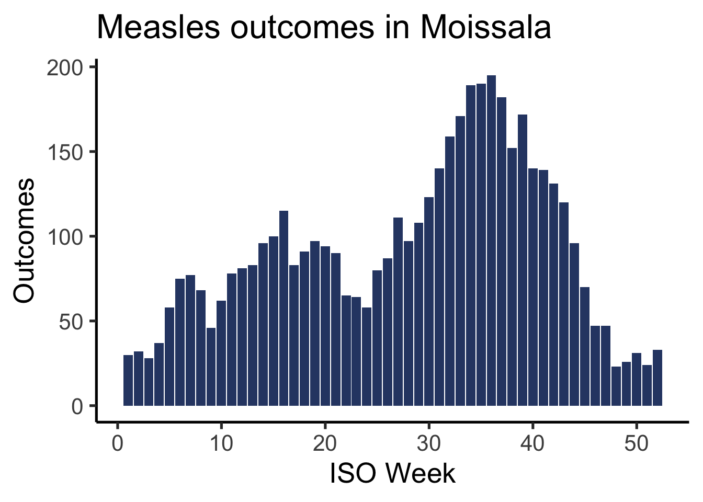
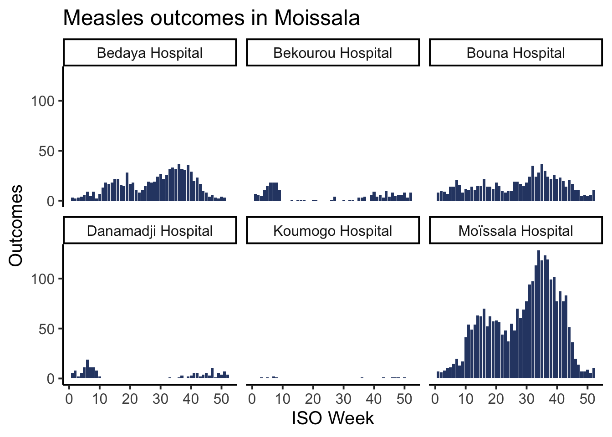

id site case_name sex age age_unit age_group
1 1 Bedaya Hospital Lan Mock f 5 months < 6 months
2 2 Moïssala Hospital Gabrielle Digregorio f 1 months < 6 months
3 3 Danamadji Hospital Amaya Solomon f 4 years 1 - 4 years
4 6 Bouna Hospital Phillip Suzuki m 5 months < 6 months
5 7 Bekourou Hospital Aaqil al-Yousif m 11 months 9 - 11 months
6 10 Koumogo Hospital Travis Engel m 1 months < 6 months
region sub_prefecture date_onset hospitalisation date_admission ct_value
1 Mandoul Bedaya 2022-08-13 yes 2022-08-18 NA
2 Mandoul Moissala 2022-08-18 yes 2022-08-19 26.6
3 Moyen Chari Danamadji 2022-08-17 yes 2022-08-18 26.6
4 Mandoul Bouna 2022-08-22 yes 2022-08-23 NA
5 Mandoul Bekourou 2022-08-30 yes 2022-08-31 NA
6 Moyen Chari Koumogo 2022-08-30 yes 2022-09-02 NA
malaria_rdt fever rash cough red_eye pneumonia encephalitis muac
1 negative 0 0 1 0 0 0 179
2 inconclusive 1 1 0 1 0 0 63
3 inconclusive 0 0 1 1 0 0 235
4 negative 1 0 1 1 0 0 117
5 inconclusive 0 1 0 0 0 0 143
6 <NA> 0 0 1 0 0 0 205
muac_cat vacc_status vacc_doses outcome date_outcome
1 Green (125+ mm) No <NA> dead 2022-08-21
2 Red (<115 mm) No <NA> recovered 2022-08-22
3 Green (125+ mm) <NA> <NA> dead 2022-08-19
4 Yellow (115 - 124 mm) No <NA> <NA> 2022-08-25
5 Green (125+ mm) No <NA> recovered 2022-09-04
6 Green (125+ mm) No <NA> recovered 2022-09-05
epi_classification week_admission week_outcome
1 confirmed 33 33
2 suspected 33 34
3 suspected 33 33
4 probable 34 34
5 suspected 35 35
6 confirmed 35 36Introduction to data visualization with ggplot2
Core
Graphs
ggplot2
epicurve
Learn the basics of buidling plots with ggplot2, and create your first epicurve.
Objectives
- Grasp the very basics of data visualization in R using ggplot2
- Build a basic epicurve
Introduction
This session is a short introduction to data visualization using the popular ggplot2 package. Keep in mind that visualization in general and even ggplot2 in particular are huge subjects that we can’t cover in a single core session. This tutorial is intended as a taster to give you a feel for how plotting is typically done. To do that, we will come back to one of our most beloved epidemiological plots: the epicurve.1
1 An epicurve is a particular type of plot that shows the number of daily (or weekly) cases observed during an outbreak. These curves are fundamental in epidemiology and often use multicolored (stacked) bars to indicate not only the number of cases but also the proportion that were suspected/confirmed, alive/dead, etc.
Our final plot will look like this: 
Setup
Before we get into the theory, let’s get your data and script ready.
Open your RStudio project and create a new script called epicurves.R with appropriate metadata. Load the following packages: here, rio, dplyr, lubridate, and ggplot2.
Add a section to your script called # IMPORT DATA where you import the clean course dataset (linelist_moissala_clean.RDS). Verify that the head() of your data looks like this:
Paradigms of Plotting
In R, and indeed in everything, there are a lot of ways to approach data visualization. Two of the biggest paradigms are :
The All-In-One: this approach is characterized by having a single, typically somewhat complex, function that handles all aspects of building a plot. Base R as well as a variety of specialized packages tend to use this approach.
Layered (or modular)2: here, instead of creating a plot with a single function, we will use separate functions to add (or modify) different features of a plot (such as the primary shapes, labels, error bars, themes, etc). This is the strategy used by packages like ggplot2, highcharter, or echarts4r.
2 This paradigm is sometimes refered to as a ‘Grammar of Graphics’ approach as it it was first articulated in a book of the same name.
An in depth discussion of why one might use one approach versus another is beyond the scope of this course, though we will note that most modern visualization packages tend to use a layered model. With that in mind, let’s take a look at the types of layers we are talking about in our “layered” approach.
Breaking it Down: A Visualization and its Parts
For the purpose of this tutorial we will talk about only four visualization components (layers):
- Canvas / Data
- Primary Shapes
- Labels
- Theme
To illustrate these components, let’s look at a basic schematic of an epicurve:

The most conceptually complex of the above layers is probably the canvas itself. Much as an artist needs to buy a canvas and conceptualize what they want to paint before they start painting, so too does a user of ggplot2. Creating the canvas is where we tell R that we want to start making a plot and what parts of the data that plot will use. Here, for example, we will tell R “I want to make a plot where the x axis represents weeks and the y axis represents cases”. Once that canvas is set up we can start adding other layers in the same way that an artist would begin adding paint, their signature, or a frame.
Now, let’s look at the syntax for these layers in ggplot2 and how to put them together.
Getting Started with {ggplot2}
The method of building a ggplot is relatively simple and takes the form:
- Create a canvas using a duo of functions
ggplot(aes(...)) - Add things to the canvas
ggplot2 takes the idea of “adding something to the canvas” very literally: each new layer will be introduced to your plot using the + sign.
The general syntax of a ggplot is then:
# PSEUDO CODE -- DO NOT RUN
df %>% # pipe in your data
ggplot(aes(x = ..., # step 1: create canvas
y = ...)) +
layer_one(...) + # step 2: add a first layer
layer_two(...) + # step 3: add another layer
... # continue adding layers...The number of layers you add depends on how complex you want your plot to be. In our case, we will be adding three layers to our canvas with the following functions:
# PSEUDO CODE -- DO NOT RUN
df %>% # pipe in your data
ggplot(aes(x = ..., # step 1: create canvas
y = ...)) +
geom_col(...) + # step 2: add shapes (bars)
labs(...) + # step 3: add titles
theme_classic(...) # step 4: add a nicer theme
Note
Notice that in the above example, our very first line is actually our dataset being piped into the ggplot() function. This makes sense since ggplot2 needs to know what data you’d like to visualize. But be careful, make sure that this line ends in a pipe (%>%) and not in a + sign like the other ones.

In the next part of the tutorial we will go through each of these steps (layers) individually using our course dataset to make your first epicurve.
Building Your First ggplot
Preparing Your Data: Aggregate by Week
Ultimately we would like to plot an epicurve of weekly cases. You may have noticed, however, that our current data is daily, so we need to do some aggregation. To start let’s determine the week associated with each admission date using the function isoweek() from the lubridate package, which takes a date (or a vector of dates) and returns the associated ISO week.3
3 ISO weeks offer an internationally standardized approach to dates that avoid differences between countries on when a week starts and how to define the first week of the year. ISO weeks begin on Monday.
example_date <- '27-01-2023'
isoweek(example_date)[1] 3Create a new section in your script called # PREPARE DATA, then use mutate() and isoweek() to create a new column in your dataframe called week_admission that contains the ISO week associated with every admission date. The head of date_admission and week_admission columns should look like this:
date_admission week_admission
1 2022-08-18 33
2 2022-08-19 33
3 2022-08-18 33
4 2022-08-23 34
5 2022-08-31 35
6 2022-09-02 35Now we need to aggregate the total number of cases that were observed each week; because we are using linelist data, the number of cases is simply the number of rows.
Using count(), create a new dataframe called df_cases that summarizes the total number of cases observed each week. The head of this data frame should look like this:
week_admission n
1 1 32
2 2 34
3 3 41
4 4 49
5 5 58
6 6 86Great! Now we are ready to make our epicurve. In the following steps, you’ll be asked to use df_cases to plot a classic epicurve of the number of weekly admissions. To demonstrate the functions you’ll be using, I will plot the curve of the number of weekly outcomes as an example. To do that, I’ve build myself another dataframe, df_outcome, which looks like this:
head(df_outcome) week_outcome patients
1 1 30
2 2 32
3 3 28
4 4 37
5 5 58
6 6 75Set up a Canvas: Initialize a Plot
The first step is creating your canvas by specifying your dataset and the names of the columns you’d like to visualize. This is done using ggplot(aes(...)) with the following syntax:
# PSEUDO CODE -- DO NOT RUN
df_data %>%
ggplot(aes(x = x_axis_variable_name,
y = y_axis_variable_name))For an epicurve of outcomes, I’d like to plot the ISO week (week_outcome) on the x-axis and the number of patients hospitalized (patients) on the y-axis. Let’s update our pseudo-code to do that:
df_outcome %>%
ggplot(aes(x = week_outcome,
y = patients))
Note
Fabulous, take a look at that big beautiful box of potential. This is our empty canvas. In RStudio this plot should show up in the panel on the bottom right of the screen.

What does aes stands for?
Now, you may be wondering what is this aes() function that we’ve nested inside of ggplot()? The short answer is that aes() creates an AESthetic mapping that tells ggplot2 which columns of our data should be represented by which visual elements of our plot (like the axes, for example).
Aesthetic mappings create a map that defines how data elements (variables) are to be represented by visual elements (like axes, colors, and sizes). For example, here we are mapping the ISO week number to the x-axis and the number of patients to the y-axis. We could also imagine, for example, an epicurve where bars are colored based on whether patients lived or died. This would be an example where the variable outcome is being mapped to the visual element of color.
For now it is enough to know that aes() is the place where you will define your x-and y-axis.
Create a new section in your script called # PLOT EPICURVE. Then create an empty canvas for your epicurve using df_cases.
At this point, your plot should look like this:
Excellent! Now let’s add some bars.
Plot the Bars
Now that we have our canvas, it’s time to add some shapes. In ggplot2, the shapes plotted on a figure are called geometries.4 Geometries are the primary visual representation of your data and should feel pretty familiar. A few common types of geometries include:
4 You’ll notice in the below examples that the function for all geometries starts with geom_. This is designed to improve human readability and indeed all geometries in ggplot2 start this way for consistency
-
Bar Plots (
geom_col()orgeom_bar()) - Histograms (
geom_hist()) - Scatterplots (
geom_point()) - Line Plots (
geom_line()) - Boxplots (
geom_boxplot())
Today, we’re doing epicurves so we are most interested in learning how to make a bar plot. In our case, we will be using geom_col().5 Remember that adding a new layer (in this case a geometry) to our ggplot is as simple as using a +, so we can add bars to the epicurve of hospitalized cases in the following way:
5 The exact difference between geom_bar() and geom_col() is a bit beyond our scope. But, in essence, whereas geom_col() is designed to work with pre-aggregated data, geom_bar() will do some degree of aggregation on its own.
df_outcome %>%
ggplot(aes(x = week_outcome,
y = patients)) +
geom_col()Brilliant! That sure looks like an epicurve to me. Though it does look a bit…grey. If we’d like to update the color of our bars (called the fill), we simply need to add the fill = argument to geom_col().6
6 Fills and border colors in ggplot2 can be specified in several ways. Here we have used a hex code, which allows us to give a unique code for specific colors. In a pinch, however, you can also specify simple colors by name. For example, arguments like "blue" or "green" would also be accepted (see a list of R named colors).
Let’s give it a try:
df_outcome %>%
ggplot(aes(x = week_outcome,
y = patients)) +
geom_col(fill = "#2E4573")Update your epicurve plot to add bars with the color #E4573.
Your plot should now look like this:
Warning: Removed 1 row containing missing values or values outside the scale range
(`geom_col()`).
Note
In the ggplot2 framework, layers must be added to an existing canvas. This means that running geom_col() by itself will not produce any visual output. This, however, makes sense. Continuing with our analogy of ggplots being like paintings, running geom_col() by itself would be like having paint with no canvas to put it on.
Looking good. Now it’s time to make our plot just a bit more informative and just a bit more attractive by adding labels and a nicer theme.
Add Some Labels
A good plot needs some good labeling; n is hardly an informative axis title. Fortunately, ggplot2 makes adding labels easy with the function labs(). This function will accept a variety of arguments allowing you to add a variety of label/title elements to your plot, for example:
- Axis Titles (
x =andy =) - Plot Title (
title =) -
Caption (
caption =)
As for other layers, we can include a label layer by adding labs() to our current plot with the + sign:
df_outcome %>%
ggplot(aes(x = week_outcome,
y = patients)) +
geom_col(fill = "#2E4573") +
labs(x = "ISO Week",
y = "Outcomes",
title = "Measles outcomes in Moissala")Update your epicurve plot to add some reasonable axis labels and a nice title.
Extra Credit! Try adding a data source using caption =.
Your plot might now look like (for example):
Warning: Removed 1 row containing missing values or values outside the scale range
(`geom_col()`).
Add a Theme
If we wanted to, we could stop here if our goal is to produce an informal plot. Ideally, however, it would be nice to use a somewhat more attractive theme and to increase the text size. To do this, we will add one last layer to our plot: a theme layer. Much like how geometries in ggplot2 all start with geom_, all themes start with theme_. There are several themes available to you and you can check out what they look like on the {ggplot2} website.
Today, we will use theme_classic(), which offers a simple but elegant output:
df_outcome %>%
ggplot(aes(x = week_outcome,
y = patients)) +
geom_col(fill = "#2E4573") +
labs(x = "ISO Week",
y = "Outcomes",
title = 'Measles outcomes in Moissala') +
theme_classic()Ok, nice. But we’d also like to increase the size of that tiny font. To do that we can adjust the base_size = argument:7
7 The base size of a plot is a baseline font size that is used to calculate the size of all text elements in a plot. If it is increased, the font size of all elements will be increased proportionally.
df_outcome %>%
ggplot(aes(x = week_outcome,
y = patients)) +
geom_col(fill = "#2E4573") +
labs(x = "ISO Week",
y = "Outcomes",
title = 'Measles outcomes in Moissala') +
theme_classic(base_size = 20)
That looks better! Keep in mind that the font size needed will depend on what the plot is going to be used for (i.e.: a presentation, an informal review, or a final report). Similarly, the exact theme you will want to use is ultimately a subjective choice. While there are guidelines, data visualization is as much an art as a science.
Add one final layer to your plot that adds a theme of your choice with an appropriate base_size =.
Save your plot
If you would like to save your epicurve, you can click on the “Export” button in the plot panel of RStudio:

Facetting: This Plot By Age Group or Site
Now, this plot is cool, but in you sitrep you want to show the data by age group, or by site. There are several ways to do that.
- The intuitive way, which you already have the skill to do, is to copy and reuse the graph code, passing different, filtered dataframes to the
ggplot()command - Use a
forloop orapplyormapfamily functions: these are ways to automatize actions that involve less copy and pasting - Trust ggplot2 to have a solution
The first option is tedious and it is easy to make errors; the second option can be quite powerfull and I hope that at some point you will learn some of these tools, but it is out of the scope of this tutorial. We will focus on the third option, which is powerfull and sufficient for many contexts.
The function facet_wrap() allow you to replicate a graph based on the categories of a variable. For example, you could make the outcome graph by sex, or by site. As other layers of a ggplot graph, you add it to your existing graph with a +. It will create a a figure with multiple small graphs, that ggplot2 calls facets or small multiples.
Get the Data Ready
If we want to to plot anything by site, the site variable must be present in the aggregated datadata. Our current summarised dataset is only summarised by week though:
head(df_outcome) week_outcome patients
1 1 30
2 2 32
3 3 28
4 4 37
5 5 58
6 6 75Let’s create a new summarized dataset that has the number of outcomes by week and by site!
# Summarise the data
df_outcome_site <- df_linelist %>%
mutate(week_outcome = isoweek(date_outcome)) %>%
count(week_outcome, site,
name = 'patients') %>%
tidyr::drop_na(week_outcome)
# Inspect the first line
head(df_outcome_site) week_outcome site patients
1 1 Bedaya Hospital 3
2 1 Bekourou Hospital 7
3 1 Bouna Hospital 8
4 1 Danamadji Hospital 5
5 1 Moïssala Hospital 7
6 2 Bedaya Hospital 2Add the Facet Layer to the Plot
Now, let’s plot this data. Look at the code bellow: it is exactly the same as before but for the last line, which creates the facets:
df_outcome_site %>%
ggplot(aes(x = week_outcome,
y = patients)) +
geom_col(fill = "#2E4573") +
labs(x = "ISO Week",
y = "Outcomes",
title = 'Measles outcomes in Moissala') +
theme_classic(base_size = 15) +
facet_wrap(vars(site)) # Make the plot by site!
Isn’t that incredible? As you can see, the function facer_wrap() takes as argument a variable name wrapped in the vars() function.
Now is your turn, you will draw a plot of the number of admissions by age group:
Prepare a new aggregated dataframe, summarized by week and age. Then, draw the epicurve by age group (still keeping all the plots improvement: labels, themes etc.)
Tip
To go further Check out the function help page to learn how to control the number of facets by row with nrow =, or column with ncol =, and how to control the maximum values of the axes with scales =.
To go even further Check out their examples in detail: one of them show how to adapt your code to do this:
Warning: Removed 6 rows containing missing values or values outside the scale range
(`geom_col()`).Done!
Very well done team! You have build your first epicurve!